https://developer.apple.com/documentation/uikit/uiview
https://developer.apple.com/documentation/uikit/views_and_controls
https://developer.apple.com/documentation/uikit/uiview#topics
Properties / Attributes (refer to documentation for other properties / attributes)
var backgroundColor: UIColor? - The view's background color.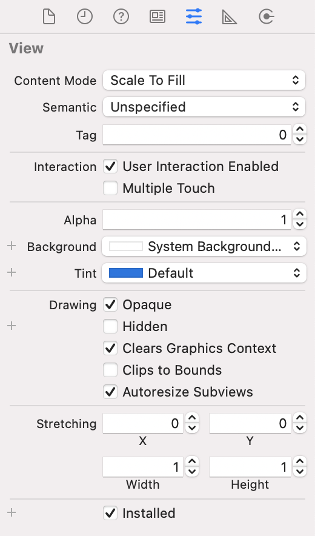
https://developer.apple.com/documentation/uikit/uisegmentedcontrol
https://developer.apple.com/documentation/uikit/uisegmentedcontrol#topics
Events (refer to documentation for other events)
The default event is Value Changed
Properties / Attributes (refer to documentation for other properties / attributes)
var selectedSegmentIndex: Int - The index number identifying the selected segment (that is, the last segment touched). If no segment was previously selected, the value is -1.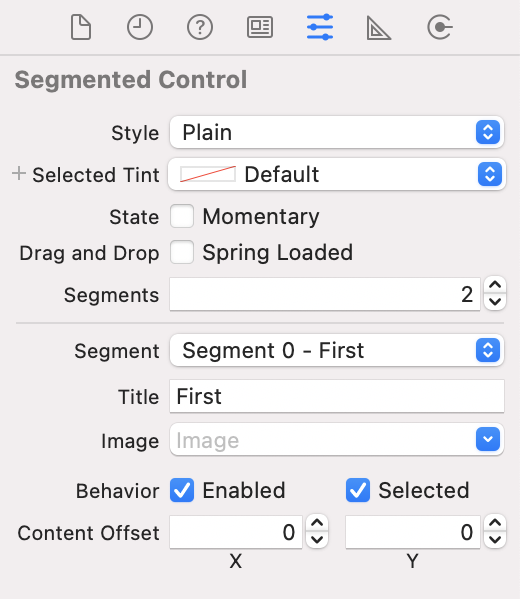
SampleProject01UISegmentedControl object to Main.storyboardUISegmentedControl for the Value Changed eventFirst, Second, Third, Fourth. In the Attributes Inspector, set the number of Segments to 4. From the dropdown list for Segment, select the segments one by one and set the corresponding Title.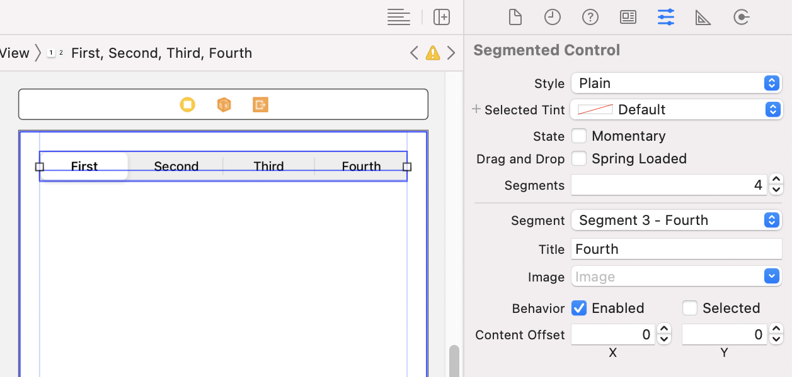
print() statement in the IBAction method to print the selectedSegmentIndex propertyimport UIKit
class ViewController: UIViewController {
override func viewDidLoad() {
super.viewDidLoad()
}
@IBAction func actSegmentedControl(_ sender: UISegmentedControl) {
print(sender.selectedSegmentIndex)
}
}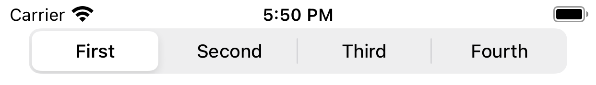
Selected for Segment 0.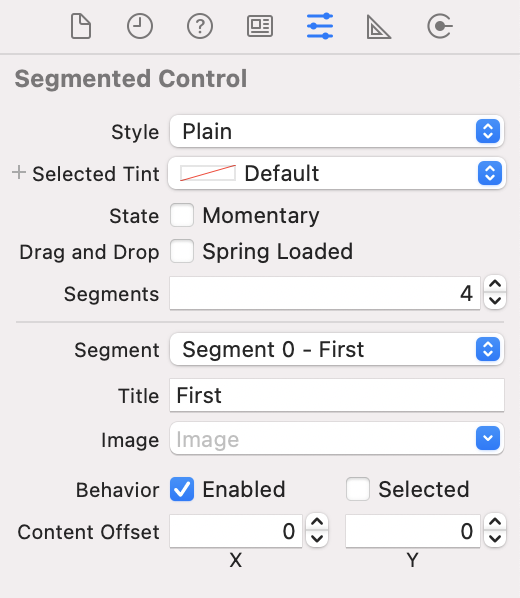
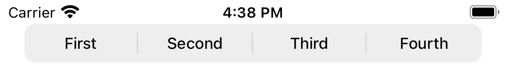
https://developer.apple.com/documentation/uikit/uiswitch
https://developer.apple.com/documentation/uikit/uiswitch#topics
Events (refer to documentation for other events)
The default event is Value Changed
Properties / Attributes (refer to documentation for other properties / attributes)
var isOn: Bool - A Boolean value that determines the off/on state of the switch.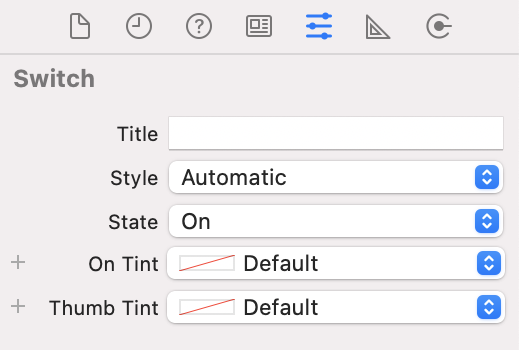
SampleProject02UISwitch object to Main.storyboard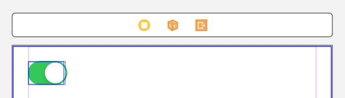
UISwitch for the Value Changed eventprint() statement in the IBAction method to print the isOn propertyimport UIKit
class ViewController: UIViewController {
override func viewDidLoad() {
super.viewDidLoad()
}
@IBAction func actSwitch(_ sender: UISwitch) {
print(sender.isOn)
}
}UISwitch.https://developer.apple.com/documentation/uikit/uistepper
https://developer.apple.com/documentation/uikit/uistepper#topics
Events (refer to documentation for other events)
The default event is Value Changed
Properties / Attributes
var isContinuous: Bool - The continuous vs. noncontinuous state of the stepper.var autorepeat: Bool - The automatic vs. nonautomatic repeat state of the stepper.var wraps: Bool - The wrap vs. no-wrap state of the stepper.var minimumValue: Double - The lowest possible numeric value for the stepper.var maximumValue: Double - The highest possible numeric value for the stepper.var stepValue: Double - The step, or increment, value for the stepper.var value: Double - The numeric value of the stepper.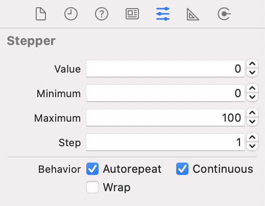
SampleProject03UIStepper object to Main.storyboard. 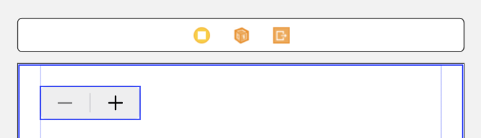
UIStepper for the Value Changed eventprint() statement in the IBAction method to print the value propertyimport UIKit
class ViewController: UIViewController {
override func viewDidLoad() {
super.viewDidLoad()
}
@IBAction func actStepper(_ sender: UIStepper) {
print(sender.value)
}
}UIStepper for the Value Changed eventprint() statement in the IBAction method to print the value propertyAutorepeat and Continuous via the Attributes Inspector and observe the behaviour when the + button is pressed, held momentarily, then released. The table below shows the expected behaviour.Autorepeat | Continuous | Behaviour |
false | false | Press and release the stepper to increment / decrement the value by one step size. |
false | true | Press and release the stepper to increment / decrement the value by one step size. |
true | false | Press and release the stepper to increment / decrement the value by a multiple of the step size (depending on the duration that the stepper is pressed) |
true | true | Press the stepper to increment / decrement the value by one step size multiple times as long as the stepper is pressed |
Autorepeat, Continuous and Wrap. When the maximum value is reached, it wraps around to the minimum value, and vice versa.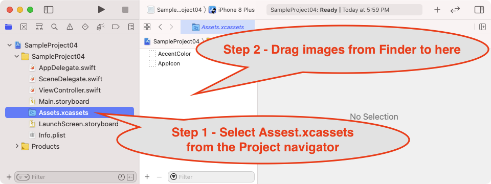
https://developer.apple.com/documentation/uikit/uiimageview
https://developer.apple.com/documentation/uikit/uiimageview#topics
Properties / Attributes (refer to documentation for other properties / attributes)
var image: UIImage? - The image displayed in the image view. Setting the value to nil results in no image being displayed.Properties / Attributes from UIView
var contentMode: UIView.ContentMode - A flag used to determine how a view lays out its content when its bounds change.scaleToFill | The option to scale the content to fit the size of itself by changing the aspect ratio of the content if necessary. |
scaleAspectFit | The option to scale the content to fit the size of the view by maintaining the aspect ratio. Any remaining area of the view's bounds is transparent. |
scaleAspectFill | The option to scale the content to fill the size of the view. Some portion of the content may be clipped to fill the view's bounds. |
center | The option to center the content in the view's bounds, keeping the proportions the same. |
top | The option to center the content aligned at the top in the view's bounds. |
bottom | The option to center the content aligned at the bottom in the view's bounds. |
left | The option to align the content on the left of the view. |
right | The option to align the content on the right of the view. |
topLeft | The option to align the content in the top-left corner of the view. |
topRight | The option to align the content in the top-right corner of the view. |
bottomLeft | The option to align the content in the bottom-left corner of the view. |
bottomRight | The option to align the content in the bottom-right corner of the view. |
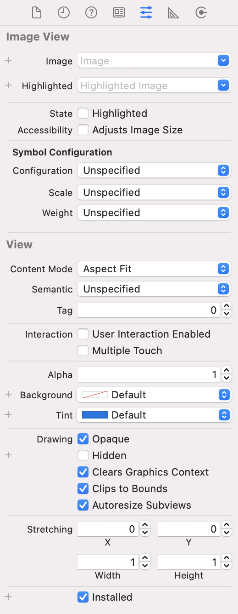
SampleProject04UIImageView object to Main.storyboard and create an IBOutlet property outImageViewAdding images.mov) e.g. logo.png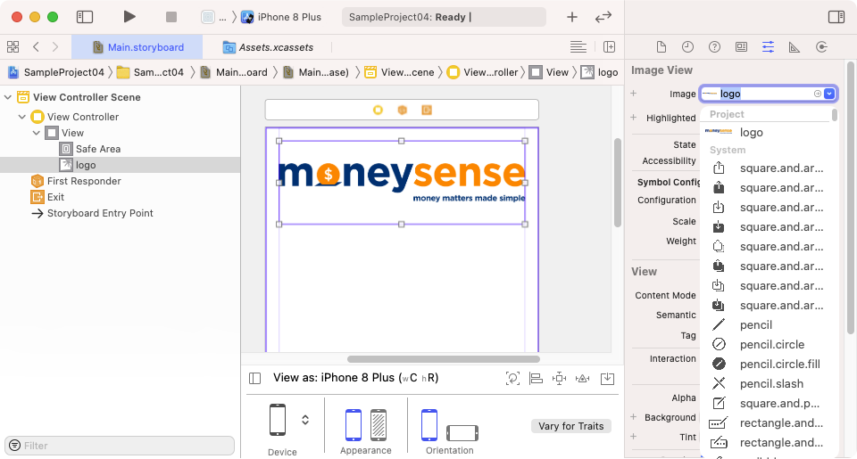
import UIKit
class ViewController: UIViewController {
@IBOutlet weak var outImageView: UIImageView!
override func viewDidLoad() {
super.viewDidLoad()
outImageView.image = UIImage(named: "logo")
}
}https://developer.apple.com/documentation/uikit/uitextview
https://developer.apple.com/documentation/uikit/uitextview#topics
Properties / Attributes (refer to documentation for other properties / attributes)
var text: String! - The text displayed by the text view.var isEditable: Bool - A Boolean value indicating whether the receiver is editable.SampleProject05UITextView object to Main.storyboard and create an IBOutlet property outTextViewviewDidLoad to set the text property of outTextView import UIKit
class ViewController: UIViewController {
@IBOutlet weak var outTextView: UITextView!
override func viewDidLoad() {
super.viewDidLoad()
outTextView.text = "Text for the text view"
}
}https://docs.swift.org/swift-book/LanguageGuide/CollectionTypes.html
https://developer.apple.com/documentation/swift/array
Visual representation of an array
Index number | 0 | 1 | 2 | 3 |
Data element | adam | beth | chad | evan |
// Create (empty array)
var names_empty : [String] = []
// Create (array with a repeated value)
var names_repeating = Array(repeating: "adam", count: 3)
// Create (array with values)
var names = ["adam", "beth", "chad"]
// Add (insert)
names.insert("kane", at: 0)
// Add (append)
names.append("dennis")
// Add (append)
names += ["evan", "jane"]
// Retrieve
var name = names[0]
// Update
names[0] = "simon"
// Remove (from any index)
let removedName = names.remove(at: 2)
// Remove (from first index)
let nameAtStart = names.removeFirst()
// Remove (from last index)
let nameAtEnd = names.removeLast()
// Sort
names = names.sorted()
// Shuffle
names.shuffle()
// Contains (exists)
let result : Bool = names.contains("adam")
// Get count
var count : Int = names.count
// Check for empty
var isEmpty : Bool = names.isEmpty
// Looping over an array
for name in names {
// do something with the array element
print(name)
}https://docs.swift.org/swift-book/LanguageGuide/ControlFlow.html
// closed range operator ... includes first and last number
for index in 1...4 {
print("\(index) times 7 is \(index * 7)")
}
// 1 times 7 is 7
// 2 times 7 is 14
// 3 times 7 is 21
// 4 times 7 is 28
// half-open range operator ... includes first number but excludes last number
for index in 1..<4 {
print("\(index) times 7 is \(index * 7)")
}
// 1 times 7 is 7
// 2 times 7 is 14
// 3 times 7 is 21
// Looping over a numeric range created using stride(from:through:by) - closed range
for index in stride(from: 7, through: 28, by: 7) {
print("\(index)")
}
// 7
// 14
// 21
// 28
// Looping over a numeric range created using stride(from:to:by) - half-open range
for index in stride(from: 7, to: 28, by: 7) {
print("\(index)")
}
// 7
// 14
// 21
var names = ["adam", "beth", "chad"]
// Looping over an array
for name in names {
// do something with the array element
print(name)
}SampleProject06viewDidLoad to examine the behaviour of loops and arraysimport UIKit
class ViewController: UIViewController {
override func viewDidLoad() {
super.viewDidLoad()
// closed range operator ... includes first and last number
print("closed range operator ... includes first and last number")
for index in 1...4 {
print("\(index) times 7 is \(index * 7)")
}
// 1 times 7 is 7
// 2 times 7 is 14
// 3 times 7 is 21
// 4 times 7 is 28
// half-open range operator ... includes first number but excludes last number
print("half-open range operator ... includes first number but excludes last number")
for index in 1..<4 {
print("\(index) times 7 is \(index * 7)")
}
// 1 times 7 is 7
// 2 times 7 is 14
// 3 times 7 is 21
// Looping over a numeric range created using stride(from:through:by) - closed range
print("Looping over a numeric range created using stride(from:through:by) - closed range")
for index in stride(from: 7, through: 28, by: 7) {
print("\(index)")
}
// 7
// 14
// 21
// 28
// Looping over a numeric range created using stride(from:to:by) - half-open range
print("Looping over a numeric range created using stride(from:to:by) - half-open range")
for index in stride(from: 7, to: 28, by: 7) {
print("\(index)")
}
// 7
// 14
// 21
// names is ["adam", "beth", "chad"]
var names = ["adam", "beth", "chad"]
// names is ["steven", "beth", "chad"]
names[0] = "steven"
// names is ["steven", "mary", "beth", "chad"]
names.insert("mary", at: 1)
// names is ["steven", "mary", "chad"]
names.remove(at: 2)
// value of count is 3
print("The names array has \(names.count) items")
// Looping over an array
print("Looping over an array")
for name in names {
// do something with the array element
print(name)
}
}
}Create an app with the following software requirements:
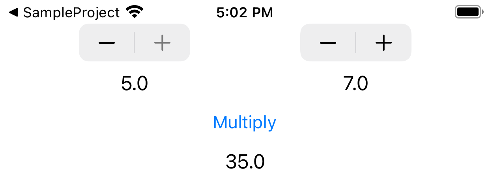
The value of the stepper is shown in the label below it
When the Multiply button is pressed, the value of the two steppers are multiplied and the result is shown in the bottom center label.
The minimum and maximum value for the left stepper is 1 and 5 respectively.
The minimum and maximum value for the right stepper is 1 and 10 respectively.
All configurations to the user interface objects must be done in code.
Create an app with the following software requirements:
The app consists of a UISegmentedControl
Depending on the selected segment, the background color of the view changes accordingly.
Hint: the view controller has a view property which is a UIView object.
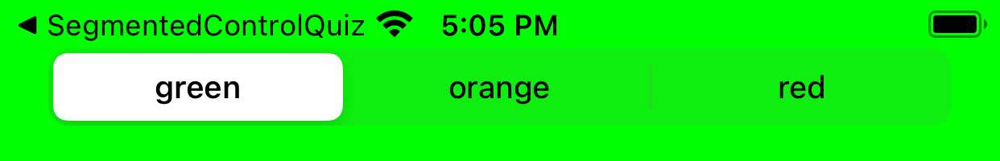
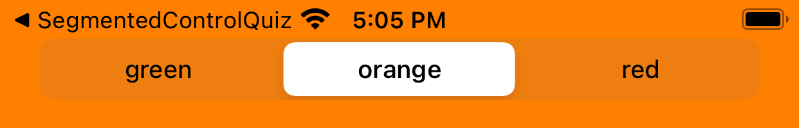
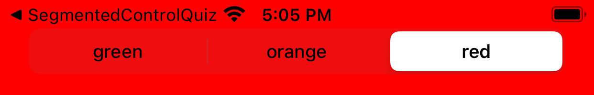
Create a playground and write the code based on the instructions given in the comments.
// create an array with the values adam, beth, charles
// print the first item from the array
// change adam to simon
// add kane to the start of the array
// remove beth from the array
// check if the array contains charles
// print the count of the array
// print out the elements of the sorted array one by one